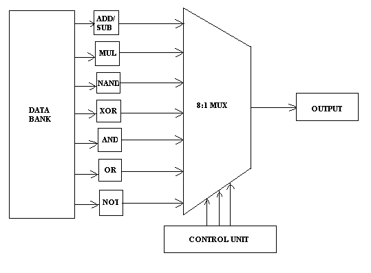
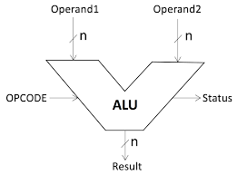

En computación, la unidad aritmética lógica o unidad aritmético-lógica, también conocida como ALU (siglas en inglés de arithmetic logic unit), es un circuito digital que calcula operaciones aritméticas (como suma, resta, multiplicación, etc.) y operaciones lógicas (si, y, o, no), entre valores (generalmente uno o dos) de los argumentos.
Por mucho, los circuitos electrónicos más complejos son los que están construidos dentro de los chips de microprocesadores modernos. Por lo tanto, estos procesadores tienen dentro de ellos un ALU muy complejo y potente. De hecho, un microprocesador moderno (y los mainframes) puede tener múltiples núcleos, cada núcleo con múltiples unidades de ejecución, cada una de ellas con múltiples ALU.
Muchos otros circuitos pueden contener en el interior una unidad aritmético lógica: unidades de procesamiento gráfico como las que están en las GPU modernas, FPU como el viejo coprocesador matemático 80387, y procesadores digitales de señales como los que se encuentran en tarjetas de sonido, lectoras de CD y los televisores de alta definición. Todos éstos tienen en su interior varias ALU potentes y complejas.
|  |  |